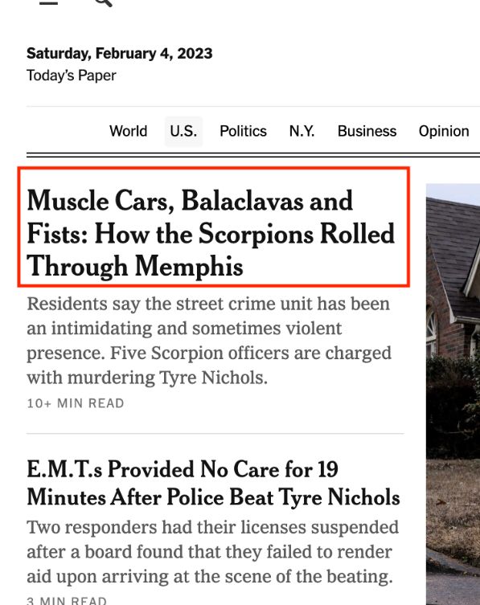
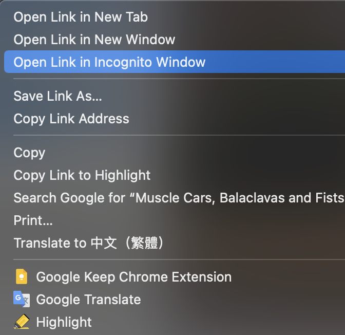
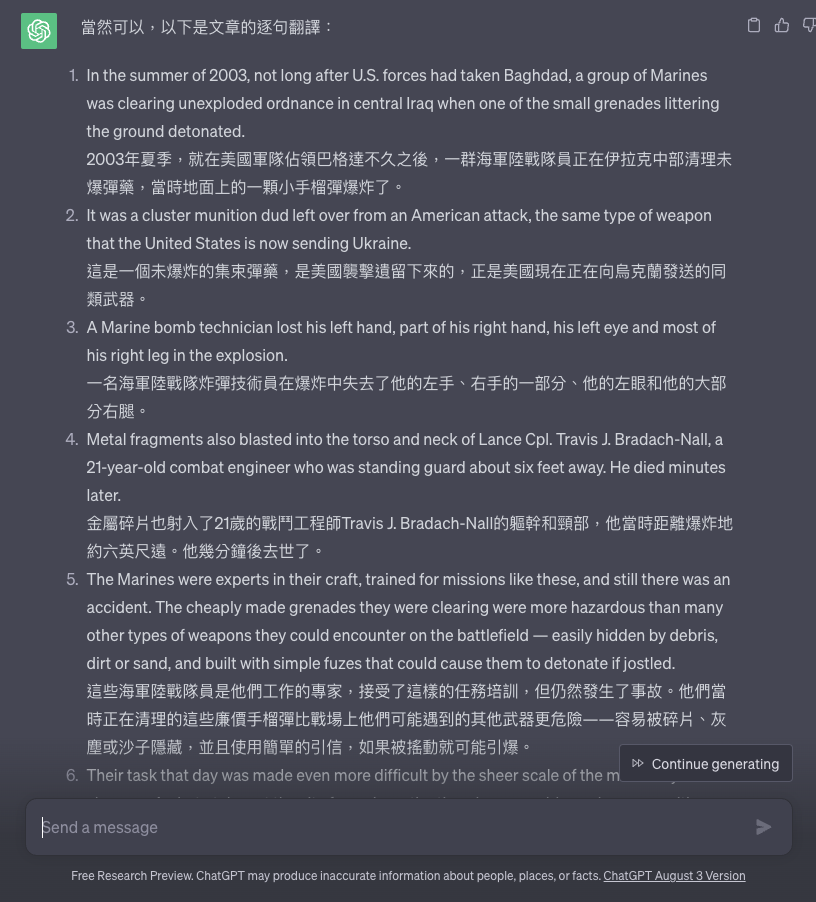

真正意義上的比手速
各位在準備英文考試的時候往往需要大量閱讀，也許你可以嘗試 讀讀看 New York Times，這是一個用詞比較難的雜誌。 可是這是一個需要付費訂閱的（網頁版的）雜誌，每週要付50美分， 也就是說一個月要付2美元，換算成台幣大概就是每個月60塊。 是說60塊不貴，但是我們可以做到不花錢就能瀏覽文章。
找到你想要看的文章的標題，直接點開或是點右鍵用新無痕分頁打開。
 這時候他的要求你訂閱或是要求登入才能顯示文章內容的視窗會遮擋網頁。 在這個彈出式視窗顯示之前按下快捷鍵: ctrl + A(全選)，然後 ctrl + c (複製) 也就是 ctrl 按著，接著按一下A再按一下C 此時就成功的複製到整篇文章了，我們就可以黏貼到我們的word去看文章的內容了。 雖然這樣做非常的耗時，但是我們可以一次就對好幾個文章下手，之後就可以一次看好幾篇了。 Tips：還可以結合ChatGpt直接翻譯，也可以讓ChatGPT逐句翻譯，如此一來不論文章裡面有多艱澀的詞也不需要擔心了。 